运动的公理或定律
定律Ⅰ
每个物体都保持其静止、或匀速直线运动的状态，除非有外力作用于它迫使它改变那个状态。
抛射体如果没有空气阻力的阻碍或重力向下牵引，将维持射出时的运动。陀螺各部分的凝聚力不断使之偏离直线运动，如果没有空气的阻碍，就不会停止旋转。行星和彗星一类较大物体，在自由空间中没有什么阻力，可以在很长时间里保持其向前的和圆周的运动。
定律Ⅱ
运动的变化正比于外力，变化的方向沿外力作用的直线方向。
如果某力产生一种运动，则加倍的力产生加倍的运动，三倍的力产生三倍的运动，无论这力是一次还是逐次施加的。而且如果物体原先是运动的，则它应加上原先的运动或是从中减去，这由它的方向与原先运动一致或相反来决定。如果它是斜向加入的，则它们之间有夹角，由二者的方向产生出新的复合运动。
定律Ⅲ
每一种作用都有一个相等的反作用；或者，两个物体间的相互作用总是相等的，而且指向相反。
不论是拉或是压另一个物体，都会受到该物体同等的拉或是压。如果用手指压一块石头，则手指也受到石头的压。如果马拉一系于绳索上的石头，则马（如果可以这样说的话）也同等地被拉向石头，因为绷紧的绳索同样企图使自身放松，将像它把石头拉向马一样同样强地把马拉向石头，它阻碍马前进就像它拉石头前进一样强。如果某个物体撞击另一物体，并以其撞击力使后者的运动改变，则该物体的运动也（由于互压等同性）发生一个同等的变化，变化方向相反。这些作用造成的变化是相等的，但不是速度变化，而是指物体的运动变化，如果物体不受到任何其他阻碍的话。因为，由于运动是同等变化的，向相反方向速度的变化反比于物体。本定律在吸引力情形也成立，我们将在附注中证明。
推论Ⅰ
物体同时受两个力作用时，其运动将沿平行四边形对角线进行，所用时间等于二力分别沿两个边所需。
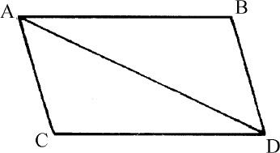
如果物体在给定的时刻受力M作用离开处所A，应以均匀速度由A运动到B，如果受力N作用离开A，则应由A到C，做出平行四边形ABDC，使两个力共同作用，则物体在同一时间沿对角线由A运动到D。因为力N沿AC线方向作用，它平行于BD，（由第二定律）将完全不改变使物体到达线BD的力M所产生的速度，所以物体将在同时到达BD，不论力N是否产生作用。所以在给定时间终了时物体将处于线BD某处；同理，在同一时间终了时物体也处于线CD上某处。因此，它处于D点，两条线交会处。但由定律Ⅰ，它将沿直线由A到D。
推论Ⅱ
由此可知，任何两个斜向力AC和CD复合成一直线力AD；反之，任何一直线力AD可分解为两个斜向力AC和CD：这种复合和分解已在力学上充分证实。
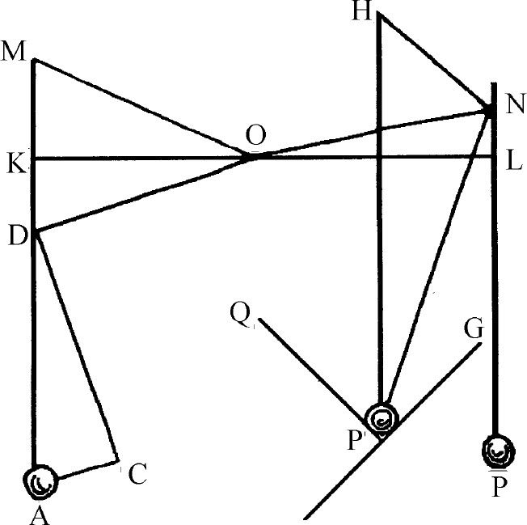
如果由轮的中心O作两个不相等的半径OM和ON，由绳MA和NP悬挂重量A和P，则这些重量所产生的力正是运动轮子所需要的，通过中心O作直线KOL，并与绳在K和L点垂直相交；再以OK和OL中较长的OL为半径以O为中心画一圆，与绳MA相交于D；连接OD，作AC平行OD，DC垂直于OD。现在，绳上的点K，L，D是否固定在轮上已无关紧要，重量悬挂在K、L点或者D、L点效果是相同的。以线段AD表示重量A的力，并把它分解为力AC和CD，其中力AC与由中心直接引出的半径OD同向，对转动轮子不作贡献；但另一个力DC与半径DO垂直，它对转动轮子的贡献与把它悬在与OD相等的半径OL上相同。即，其效果与重量P相同，如果
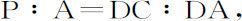
但由于三角形ADC与DOK相似。
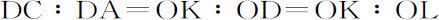
因此，
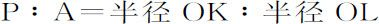
这两个半径同处一条直线上，作用等效，因此是平衡的，这就是著名的平衡、杠杆和轮子的属性。如果该比例中一个力较大，则其转动轮子的力同等增大。
如果重量p ＝P部分悬挂在线N p 上，部分悬挂在斜面p G上，作p H，NH，使前者垂直于地平线，后者垂直于斜面p G，如果把指向下的重量p 的力以线p H来表示，则它可以分解为力p N、HN。如果有一个平面p Q垂直于绳p N，与另一平面相交，相交线平行于地平线，则重量p 仅由p Q、p G支撑，它分别以p N、HN垂直压迫这两平面，即平面p Q受力p N，平面p G受力HN。所以，如果抽去平面，则重量将拉紧绳子，因为它现在取代抽去了的平面，悬挂着重量，它受到的张力就是先前压平面的力p N，所以
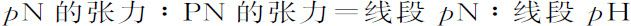
因此，如果p 与A的比值是p N和AM到轮中心的最小距离的反比与p H和p N的比的乘积，则重量p 与A转动轮子的效果相同，而且相互维持，这很容易得到实验验证。
不过重量p 压在两个斜面上，可以看做是被一个楔劈开的物体的两个内表面，由此可以确定楔和槌的力：因为重量p 压平面p Q的力就是沿线段p H方向的力，不论它是自身重力或者槌子敲的力，在两个平面上的压力，即
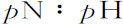
以及在另一个平面p G上的压力，即
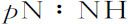
据此也可以把螺钉的力作类似分解，它不过是由杠杆力推动的楔子。所以，本推论应用广泛而久远，而其真理性也由之得以进一步确证。因为依照所有力学准则所说的以各种形式得到不同作者的多方验证，因为由此也不难推知由轮子、滑轮、杠杆、绳子等构成的机器力，和直接与倾斜上升的重物的力，以及其他的机械力，还有动物运动骨骼的肌肉力。
推论Ⅲ
由指向同一方向的运动的和，以及由相反方向的运动的差，所得的运动的量，在物体间相互作用中保持不变。
根据定律Ⅲ，作用与反作用方向相反大小相等，而根据定律Ⅱ，它们在运动中产生的变化相等，各自作用于对方。所以，如果运动方向相同，则增加给前面物体的运动应从后面的物体中减去，总量与作用发生前相同。如果物体相遇，运动方向相反，则两方面的运动量等量减少，因此，指向相反方向的运动的差维持相等。
设球体A为另一球体B的3倍大，A运动速度＝2，B运动速度＝10，且与A方向相同。则
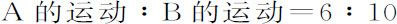
设它们的运动量分别为6单位和10单位，则总量为16单位。所以，在物体相遇的情形，如果A得到3，4或5个运动单位，则B失去同等的量，碰撞后A的运动为9，10或11单位，而B为7，6或5，其总和与先前一样为16单位。如果A得到9，10，11或12个运动单位，碰撞后运动量增大到15，16，17或18单位，而B所失去的与A得到的相等，其运动或者是由于失去9个单位而变为1，或是失去全部10个单位而静止，或是不仅失去其全部运动，而且（如果能这样的话）还多失去了一个单位，以1个单位向回运动，也可以失去12个单位的运动，以2运动单位向回运动。二个物体总和为
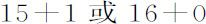
相反方向运动的差
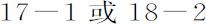
总是等于16单位，与它们相遇碰撞之前相同，然而在碰撞后物体前进的运动量为已知时，物体的速度中的一个也可以知道，方法是，碰撞后与碰撞前的速度之比等于碰撞后与碰撞前的运动之比，在上述情形中。
碰撞前A的运动（6）：碰撞后A的运动（18）＝碰撞前A的速度（2）：碰撞后A的速度（X）即：
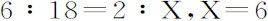
但是，如果物体不是球形，或运动在不同直线上，在斜向上碰撞，则要求出其碰撞后的运动时，首先应确定在碰撞点与两物体相切的平面的位置，然后把每个物体的运动（由推论Ⅱ）分解为两部分，一部分垂直于该平面，另一部分平行于该平面。因为二物体的相互作用发生在与该平面相垂直的方向上，而在平行于平面的方向上物体的运动量在碰撞前后保持不变。在垂直方向的运动是等量反向地变化的，由此同向运动的和成反向运动的差与先前相同。由这种碰撞有时也会提出物体绕中心的循环运动问题，不过我不拟在下文中加以讨论，而且要将与此有关的每种特殊情形都加证明也太过繁冗了。
推论Ⅳ
两个或多个物体的公共重心不因物体自身之间的作用而改变其运动或静止状态，因此，所有相互作用着的物体（有外力和阻滞作用除外）其公共重心或处于静止状态，或处于匀速直线运动状态。
因为，如果有两个点沿直线做匀速运动，按给定比例把两点间距离分割，则分割点或是静止，或是以匀速直线运动。在以后的引理23及其推论中将证明如果点在同一平面中运动，这一情形为真，由类似的方法，还可证明当点不在同一平面内运动的情形。因此，如果任意多的物体都以匀速直线运动，则它们中的任意两个的重心处于静止或是做匀速直线运动，因为这两个匀速直线运动的物体其重心连线被一给定比例在公共重心点分割。用类似方法，这两个物体的公共重心与第三个物体的重心也处于静止或匀速直线运动状态，因为这两个物体的公共重心与第三个物体的重心间的距离也以给定比例分割。以此类推，这三个物体的公共重心与第四个物体的重心间的距离也可以给定比例分割，以至于infinitum（无穷）。所以，一个物体体系，如果它们之间没有任何作用，也没有任何外力作用于它们之上，因而它们都在做匀速直线运动，则它们全体的公共重心或是静止或是以匀速直线运动。
还有，相互作用着的二物体系统，由于它们的重心到公共重心的距离与物体成反比，则物体间的相对运动，不论是趋近或是背离重心，必然相等。因而运动的变化等量而反向，物体的共同重心由于其相互间的作用而既不加速也不减速，而且其静止或运动的状态也不改变。但在一个多体系统中，因为任意两个相互作用着的物体的共同重心不因这种相互作用而改变其状态，而其他物体的公共重心受此一作用甚小；然而这两个重心间的距离被全体的公共重心分割为反比于属于某一中心的物体的总和的部分，所以，在这两个重心保持其运动或静止状态的同时，所有物体的公共重心也保持其状态：需指出的是全体的公共重心其运动或静止的状态不能因受到其中任意两个物体间相互作用的破坏而改变。但在这样的系统中物体间的一切作用或是发生在某两个之间，或是由一些双体间的相互作用合成，因此它们从不对全体的公共重心的运动或静止状态产生改变。这是由于当物体间没有相互作用时，重心将保持静止或做匀速直线运动，即使有相互作用，它也将永远保持其静止或匀速直线运动状态，除非有来自系统之外的力的作用破坏这种状态。所以，在涉及保守其运动或静止状态问题时，多体构成的系统与单体一样适用同样的定律，因为不论是单体或是整个多物体系统，其前进运动总是通过其重心的运动来估计的。
推论Ⅴ
一个给定的空间，不论它是静止，或是作不含圆周运动的匀速直线运动，它所包含的物体自身之间的运动不受影响。
因为方向相同的运动的差，与方向相反的运动的和，在开始时（根据假定）在两种情形中相等，而由这些和与差即发生碰撞，物体相互间发生作用，因而（按定律Ⅱ）在两种情形下碰撞的效果相等，因此在一种情形下物体相互之间的运动将保持等同于在另一种情形下物体相互间的运动。这可以由船的实验来清楚地证明，不论船是静止或匀速直线运动，其内的一切运动都同样进行。
推论Ⅵ
相互间以任何方式运动着的物体，在都受到相同的加速力在平行方向上被加速时，都将保持它们相互间原有的运动，如同加速力不存在一样。
因为这些力同等作用（其运动与物体的量有关）并且是在平行线方向上，则（根据定律Ⅱ）所有物体都受到同等的运动（就速度而言），因此它们相互间的位置和运动不发生任何改变。
附注
迄此为止我叙述的原理已为数学家所接受，也得到大量实验的验证。由前两个定律和前两个推论，伽利略曾发现物体的下落随时间的平方而变化（in duplicate ratione temporis），抛体的运动沿抛物线进行，这与经验相吻合，除了这些运动受到空气阻力的些微阻滞。物体下落时，其重量的均匀力作用相等，在相同的时间间隔内，这种相等的力作用于物体产生相等的速度；而在全部时间中全部的力所产生的全部的速度正比于时间。而对应于时间的距离是速度与时间的乘积，即正比于时间的平方。当向上抛起一个物体时，其均匀重力使其速度正比于时间递减，在上升到最大高度时速度消失，这个最大高度正比于速度与时间的乘积，或正比于速度的平方。如果物体沿任意方向抛出，则其运动是其抛出方向上的运动与其重力产生的运动的复合。因此，如果物体A只受抛射力作用，抛出后在给定时间内沿直线AB运动，而自由下落时，在同一时间内沿AC下落，作平行四边形ABDC，则该物体作复合运动，在给定时间的终了时刻出现在D处；物体画出的曲线AED是一抛物线，它与直线AB在A点相切，其纵坐标BD则与直线AB的平方成比例，由相同的定律和推论还能确定单摆振动时间，这在日用的摆钟实验中得到证明。运用这些定律、推论再加上定律Ⅲ，克里斯托弗·雷恩（Christopher Wren）爵士、瓦里斯（Wallis）博士和我们时代最伟大的几何学家惠更斯先生，各自独立地建立了硬物体碰撞和反弹的规则，并差不多同时向皇家学会报告了他们的发现，他们发现的规则极其一致。瓦里斯博士的确稍早一些发表，其次是克里斯托弗·雷恩爵士，最后是惠更斯先生。但克里斯托弗·雷恩爵士用单摆实验向皇家学会作了证明，马略特（M. Mariotte）很快想到可以对这一课题作全面解释。但要使该实验与理论精确相符，我们必须考虑到空气的阻力和相撞物体的弹力。将球体A，B以等长弦AC，BD平行地悬挂于中心C，D，绕此中心，以弦长为半径画出半圆EAF，GBH，并分别为半径CA，DB等分。将物A移到弧EAF上任意一点R，并（也移开物体B）由此让它摆下，设一次振动后它回到V点，则RV就是空气阻力产生的阻滞。取ST等于RV的四分之一并置于中间，即
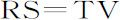
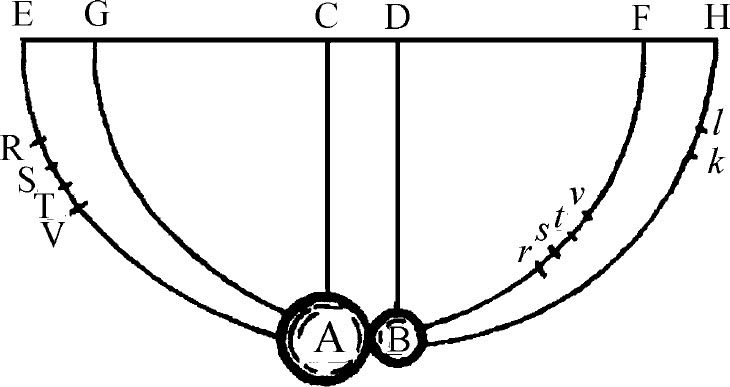
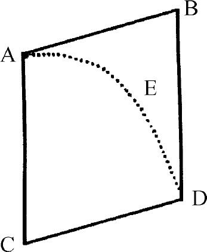
并有
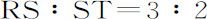
则ST非常近似地表示由S下落到A过程中的阻滞。再移回物体B，设物体A由点S下落，它在反弹点A的速度将与它in vacuo （在真空中）自点T下落时的大致相同，差别不大。由此看该速度可用弦TA长度来表示，因为这在几何学上是众所周知的命题：摆锤在其最低点的速度与它下落过程所划出的弧长成比例。反弹之后，设物体A到达S处，物体B到达k 处，移开物体B，找一个V点，使物体A下落后经一次振荡后回到r 处，而st 是rv 的四分之一，并置于其中间使rs 等于tv ，令弧t A的长表示物体A在碰撞后在A处的速度，因为t 是物体A在不考虑空气阻力时所能达到的真实而正确的处所，用同样方法修正物体B所能达到的k 点，选出l 点为它in vacuo （在真空中）达到的处所。这样就具备了所有如同真的在in vacuo （在真空中）做实验的条件。在此之后，我们取物体A与弧TA的长（它表示其速度）的乘积（如果可以这样说的话），得到它在A处碰撞前一瞬间的运动，与弧t A的长的乘积表示碰撞后一瞬间的运动；同样，取物体B与弧Bl 的长的乘积，就得到它在碰撞后同一瞬间的运动。用类似的方法，当两个物体由不同处所下落到一起时，可以得出它们各自的运动以及碰撞前后的运动，进而可以比较它们之间的运动，研究碰撞的影响。取摆长10英尺，所用的物体有相等也有不相等的，在通过很大的空间，如8，12或16英尺之后使物体相撞，我总是发现，当物体直接撞在一起时，它们给对方造成的运动的变化相等，误差不超过3英寸，这说明作用与反作用总是相等。若物体A以9单位的运动撞击静止的物体B，失去7个单位，反弹运动为2，则B以相反方向带走7个单位。如果物体由迎面的运动而碰撞，A为12单位运动，B为6，则如果A反弹运动为2，则B为8，即，双方各失去14单位的运动。因为由A的运动中减去12单位，则A已无运动，再减去2单位，即在相反方向产生2单位的运动；同样，从物体B的6个单位中减去14单位，即在相反方向产生8个单位的运动。而如果二物体运动方向相同，A快些，有14单位运动，B慢些，有5个单位，碰撞后A余下5个单位继续前进，而B则变为14单位，9个单位的运动由A传给B。其他情形也相同。物体相遇或碰撞，其运动的量，得自同向运动的和或是逆向运动的差，都绝不改变。至于一二英寸的测量误差可以轻易地归咎于很难做到事事精确上。要使两只摆精确地配合，使它们在最低点AB相互碰撞，要标出物体碰撞后达到的位置s 和k 是不容易的。还不止于此，某些误差，也可能是摆锤体自身各部分密度不同，以及其他原因产生的结构上的不规则所致。
可能会有反对意见，说这项实验所要证明的规律首要假定物体或是绝对硬的，或至少是完全弹性的（而在自然中这样的物体是没有的），有鉴于此，我必然补充一下，我们叙述的实验完全不取决于物体的硬度，用柔软的物体与用硬物体一样成功。因为如果要把此规律用在不完全硬的物体上，只要按弹力的量所需比例减少反弹的距离即可。根据雷恩和惠更斯的理论，绝对硬的物体的反弹速度与它们相遇的速度相等，但这在完全弹性体上能得到更肯定的证实。对于不完全弹性体，返回的速度要与弹性力同样减小，因为这个力（除非物体的相应部分在碰撞时受损，或像在锤子敲击下被延展）是（就我所能想见而言）确定的，它使物体以某种相对速度离开另一个物体，这个速度与物体相遇时的相对速度有一给定的比例。我用紧压坚固的羊毛球做过试验。首先，让摆锤下落，测量其反弹，确定其弹性力的量，然后，根据这个力，估计在其他碰撞情形下所应反弹的距离。这一计算与随后做的其他实验的确吻合。羊毛球分开时的相对速度与相遇时的速度总是大约5比9，钢球的返回速度几乎完全相同，软木球的速度略小，但玻璃球的速度比约为15比16，这样，第三定律在涉及碰撞与反弹情形时，都获得了与经验相吻合的理论证明。
对于吸引力的情形，我沿用这一方法作简要证明。设任意两个相遇的物体A，B之间有一障碍物介入，两物体相互吸引。如果任一物体，比如A，被另一物体B的吸引，比物体B受物体A的吸引更强烈一些，则障碍物受到物体A的压力比受到物体B的压力要大，这样就不能维持平衡：压力大的一方取得优势，把两个物体和障碍物共同组成的系统推向物体B所在的一方；若在自由空间中，将使系统持续加速直至in infinitum （无限）；但这是不合理的，也与第一定律矛盾。因为，由第一定律，系统应保持其静止或匀速直线运动状态，因此两物体必定对障碍物有相等压力，而且相互间吸引力也相等。我曾用磁石和铁做过实验。把它们分别置于适当的容器中，浮于平静水面上，它们相互间不排斥，而是通过相等的吸引力支撑对方的压力，最终达到一种平衡。
同样，地球与其部分之间的引力也是相互的。令地球FI被平面EG分割成EGF和EGI两部分，则它们相互间的重量是相等的。因为如果用另一个平行于EG的平面HK再把较大的一部分EGI切成两部分EGKH和HKI，使HKI等于先前切开的部分EFG，则很明显中间部分EGKH自身的重量合适，不会向任何一方倾倒，始终悬着，在中间保持静止和平衡。但一侧的部分HKI将用其全部重量把中间部分压向另一侧的部分EGF，所以EGI的力，HKI和EGKH部分的和，倾向于第三部分EGF，等于HKI部分的重量，即第三部分EGF的重量。因此，EGI和EGF两部分相互之间的重量是相等的，这正是要证明的。如果这些重量真的不相等，则漂浮在无任何阻碍的以太中的整个地球必定让位于更大的重量，逃避开去，消失于无限之中。
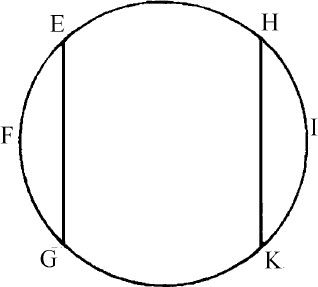
由于物体在碰撞和反弹中是等同的，其速度反比于其惯性力，因而在运用机械仪器中有关的因素也是等同的，并相互间维持对方相反的压力，其速度由这些力决定，并与这些力成反比。
所以，用于运动天平的臂的重量，其力是相等的，在使用天平时，重量反比于天平上下摆动的速度，即，如果上升或下降是直线的，其重量的力就相等，并反比于它们悬挂在天平上的点到天平轴的距离；但若有斜面插入，或其他障碍物介入致使天平偏转，使它斜向上升或下降，那些物体也相等，并反比于它们参照垂直线所上升或下降的高度，这取决于垂直向下的重力。
类似的方法也用于滑轮或滑轮组。手拉直绳子的力与重量成正比，不论重物是直向或斜向上升，如同重物垂直上升的速度正比于手拉绳子的速度，都将拉住重物。
在由轮子复合而成的时钟和类似的仪器中，使轮子运动加快或减慢的反向力，如果反比于它们所推动的轮子的速度，也将相互维持平衡。
螺旋机挤压物体的力正比于手旋拧手柄使之运动的力，如同手握住那部分把柄的旋转速度与螺旋压向物体的速度。
楔子挤压或劈开木头两边的力正比于锤子施加在楔子上的力，如同锤子敲在楔上使之在力的方向上前进的速度正比于木头在楔下在垂直于楔子两边的直线方向上裂开的速度，所有机器都给出相同的解释。
机器的效能和运用无非是减慢速度以增加力，或者反之。因而运用所有适当的机器，都可以解决这样的问题：以给定的力移动给定的重量 ，或以给定的力克服任何给定的阻力。如果机器设计成其作用和阻碍的速度反比于力，则作用就能刚好抵消阻力，而更大的速度就能克服它。如果更大的速度大到足以克服一切阻力。它们通常来自接触物体相互滑动时的摩擦，或要分离连续的物体的凝聚，或要举起的物体的重量，则在克服所有这些阻力之后，剩余下的力就将在机器的部件以及阻碍物体中产生与自身成正比的力速度。但我在此不是要讨论力学，我只是想通过这些例子说明第三定律适用之广泛和可靠。如果我们由力与速度的乘积去估计作用，以及类似地，由阻碍作用的若干速度与由摩擦、凝聚、重量产生的阻力的乘积去估计阻碍反作用，则将发现一切机器中运用的作用与反作用总是相等的。尽管作用是通过中介部件传递的，最后才施加到阻碍物体上，其最终的作用总是针对反作用的。